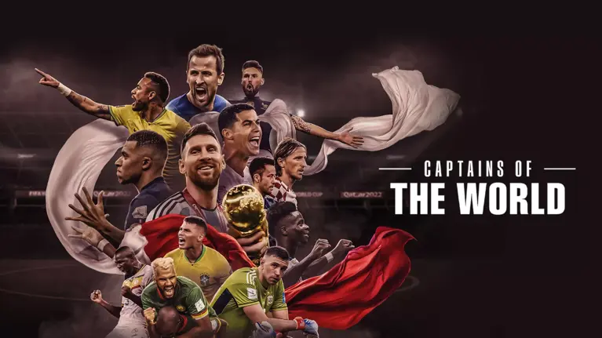

Andijan, Bukhara y Tashkent se preparan para montar un show espectacular
¿Qué hará que Andijan, Bukhara y Tashkent sean los escenarios perfectos para la Copa Mundial de Futsal de la FIFA? Algunas estrellas ayudan a la FIFA a dar la respuesta.

Disfruta de Captains of the World gratis en FIFA+
Del vestuario al terreno de juego, accede en exclusiva a las 32 selecciones que lucharon por la gloria futbolística en la Copa Mundial de la FIFA 2022™.
